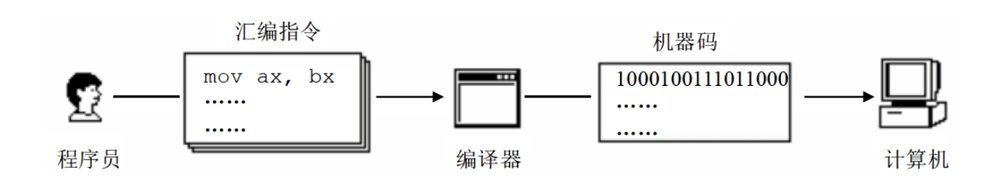
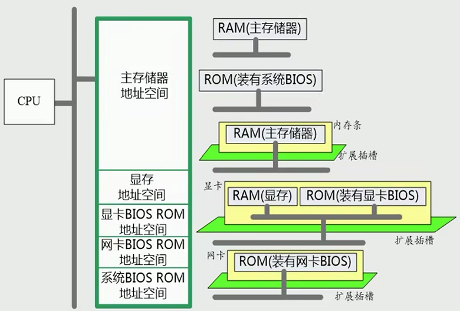
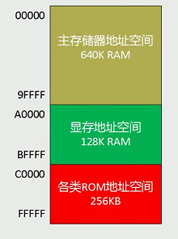
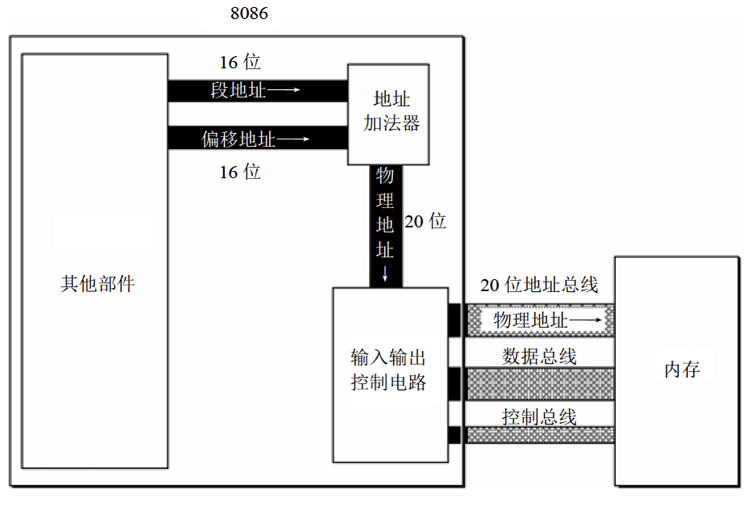
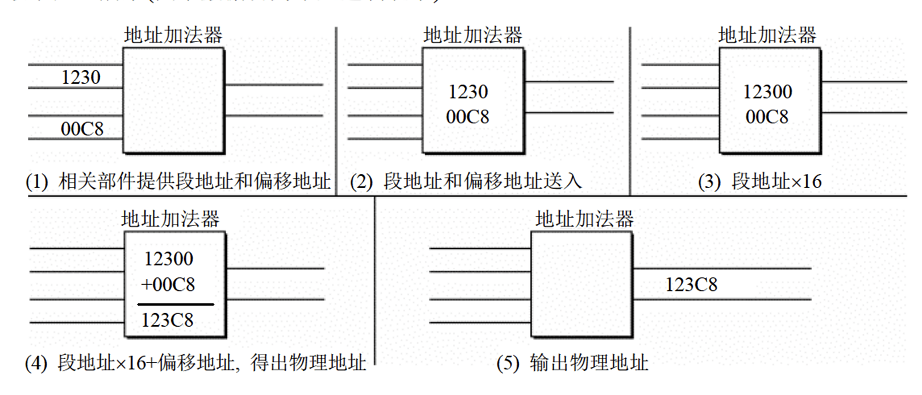
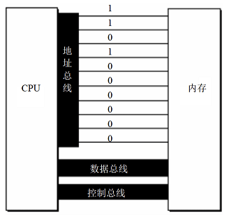
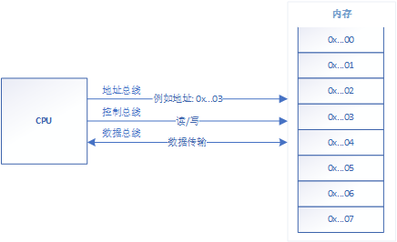

# 一、参考
- 王爽老师的《汇编语言》
- 《C++ 反汇编与逆向分析技术揭秘》
- B 站视频：通俗易懂的汇编语言
- Processor Architecture
# 二、汇编的简介
# 1. 起源
最初的编程语言是 0 和 1 排列组合的二进制语言，是现代计算机语言的鼻祖！因为这种语言不便使用、不直观、反人类等等缺点，然后就创造了高级的汇编语言。
# 2. 汇编语言和二进制语言的比较
- 二进制语言：10001001 11011000 ...
- 汇编语言：mov rax, rbx ...
# 3. 汇编语言和二进制语言的关系
- 计算机只认识二进制语言，所以汇编语言最终都会转换成二进制语言！

# 4. 组成成分
- 二进制语言的组成
- 指令（机器码）和数据
- 汇编语言的组成
- 汇编指令：机器码的助记符，有对应的机器码。 例如：add rax,1
- 伪指令：由编译器识别执行，没有对应的机器码，计算机并不会执行。例如：assume/segment 关键字
- 符号：如 +、-、*、/ 等，由编译器识别，没有对应的机器码。例如：mov rax, [rbx - 8]
- 数据。
# 5. 汇编指令的基本介绍
- 基本形式：指令 操作数 1, 操作数 2 。注意有些指令只有一个操作数。
- Example：
- 将 bx 寄存器的内容复制到 ax 中：mov ax,bx
- ax 减去 bx：sub ax,bx
- 跳转到 ax 所指段内地址处：jmp ax
# 三、内存和地址
# 1. 储存单元
内存单位
- 内存最小信息单位是 Bite
- 1 Byte = 8 Bite 1 KB = 1024 Byte 1 MB = 1024 KB 1 GB = 1024 KB 1 TB = 1024 GB
存储单元
- 计算机的最小存储单元是字节（Byte）。比如：int 占用 4 个字节，从来没有 4.5 个字节的说法！ bool 占 1 个字节大小！
- 但是程序可控制的最小单位是比特（Bite）。
比如：网络游戏的信息传输，是以比特流传输的，使用左移 “<<”、右移 “>>”、与 “|”、或 “&” 运算符精确控制到 Bite 单位。
# 2. 地址
- 地址
- 物理地址：物理地址是物理内存的地址编号，包括 RAM 和 ROM。
- 虚拟地址：在操作系统的 MMU（内存管理单元）的作用下，建立 物理地址 <=> 虚拟地址 的映射。通过虚拟地址映射可以产生比物理地址更大的内存空间。
- 逻辑地址：段 + 偏移 相对地址的算法。
- 应用程序：
- 计算机程序使用操作系统映射的虚拟地址来运行机器码、存储和截取数据。
- 大多数的应用程序无法得知实际的物理地址，而是使用电脑的内存管理单元及操作系统的内存映射，为 “逻辑地址” 或虚拟地址定址。
- 所以在程序使用的或 VS 的 Watch 窗口上看到的地址都是转换过后的虚拟地址！而虚拟地址也会被转换成物理地址交给 CPU 使用！
- 程序员编程（逻辑地址）-> 操作系统（虚拟地址）<-MMU-> 物理地址 -> CPU 寻址 -> 物理元件
- 汇编程序：汇编语言寻址方式
- 汇编语言 -> 物理地址 -> CPU 寻址 -> 物理元件
- 段地址和偏移地址（逻辑地址算法）
- 段地址：电脑内存储器的物理地址可被 CPU 分为若干逻辑段。每个逻辑段的起始地址称为段地址。
- 偏移地址：段地址到目标地址的偏移量！
- 相对寻址：CPU 可以使用不同的段地址和偏移地址定位内存，最终结果相同就是同一块内存。
- CPU 访问的物理地址 = 段地址 * N + 偏移地址。N 的大小取决于段地址的分配方法！
- 8086 机中 N=16，正好十六进制左移一位，也就是 物理地址 = 段地址后面添个 0 + 偏移地址。
- 异曲同工之妙：某个实例化对象的成员变量地址 = 对象的首地址 + 成员变量的偏移地址
- 段地址误区：内存没有分段，汇编语言的段地址是 CPU 的相对寻址的概念，是由 CPU 划分的物理地址！
# 4. 地址大小
- 2 个十六进制数可以表示 1 个字节，所以 1 个十六进制数可以表示 4 个比特大小！======> 2^4 = 16 。
- 32 位系统地址：32 位二进制组成的地址，占 4 个字节，最大能直接寻址 4GB（2^32）。例如：0x01234567
- 64 位系统地址：64 位二进制组成的地址，占 8 个字节。例如：0x0123456789ABCDEF
# 3. 给地址编号
- 所有的物理内存被统一规划为一个线性的逻辑结构，然后地址 0x000... 开始顺序给内存存储单元编号。
 - 8086PC 机逻辑地址编号

# 4. 地址加法器
- 地址加法器可以合成更大的地址，来供 CPU 相对寻址！
 - 例如 8086CPU（16 位）地址加法器：
物理地址 = 段地址 * 16 + 偏移地址
0x1230 * 16 + 0x00C8 = 0x123C8

# 四、寄存器
- 寄存器简介：CPU 内部的小型存储器，用于运算时暂时存放参与运算的数据和运算的结果。
- 寄存器文档：
- 微软官方文档 x86 处理器结构
- 微软官方文档 x64 处理器结构
- X64 汇编语言寄存器结构及其与 X86 架构编程区别
- X64 汇编
- VS 寄存器窗口
- 在程序断下来后，可以通过 VS 的寄存器窗口查看当前执行程序寄存器的值。
# 五、CPU
# 1. CPU 简介
- 典型的 CPU 由运算器、控制器、寄存器组成。
- 运算器：处理信息。
- 寄存器：存储信息。
- 控制器：分析指令并发出相应的控制信号。
- 内部总线：连接各种器件，在它们之间进行数据传送。
- 对于汇编程序员来说，CPU 中主要的部件是寄存器，寄存器是 CPU 中程序员可以使用指令读写的部件。程序员通过改变各种寄存器中的内容来实现对 CPU 的控制！
# 2. 总线
- 地址总线
- CPU 访问内存单元时，必须向内存提供内存单元的物理地址。
- 计算机是通过地址总线寻址，地址总线的宽度（位数）决定了 CPU 可直接寻址的内存空间大小。
- 假如：地址总线宽度为 N，也就是有 N 根导线，能直接寻址的最大地址为 2^N。
- 32 位系统：地址总线宽度为 32，2^32 = 4096 MB = 4 GB 。所以在 32 系统里，能直接寻址大小为 4GB。
- 下面是地址总线宽度为 10 的传输地址图，其他总线同理：

- 控制总线：发送命令。
- 数据总线：数据传输。
# 2. CPU 对内存的读写
- 先通过地址总线发送地址信息给内存，然后控制总线发送读写命令，最后通过数据总线传输数据到 CPU 或内存。

# 六、基本指令
- 微软官方文档 x86 指令
- 微软官方文档 x64 指令
- 大部分汇编指令在网络上都能查到相关的资料！